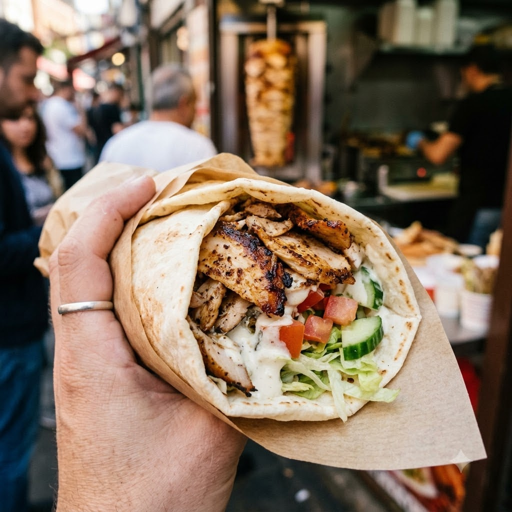

Chef Magic (Mix marinade) → Airfryer 200°C Marinate 30 min + Grill 16 min — Serves 4
Prep ahead: Marinate the chicken for at least 30 minutes before grilling.
Ingredients
Method
Tip: Slicing the chicken thin before marinating means it grills fast and shreds easily, just like a spit-roasted shawarma.